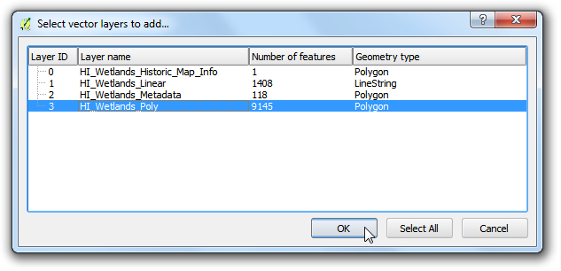
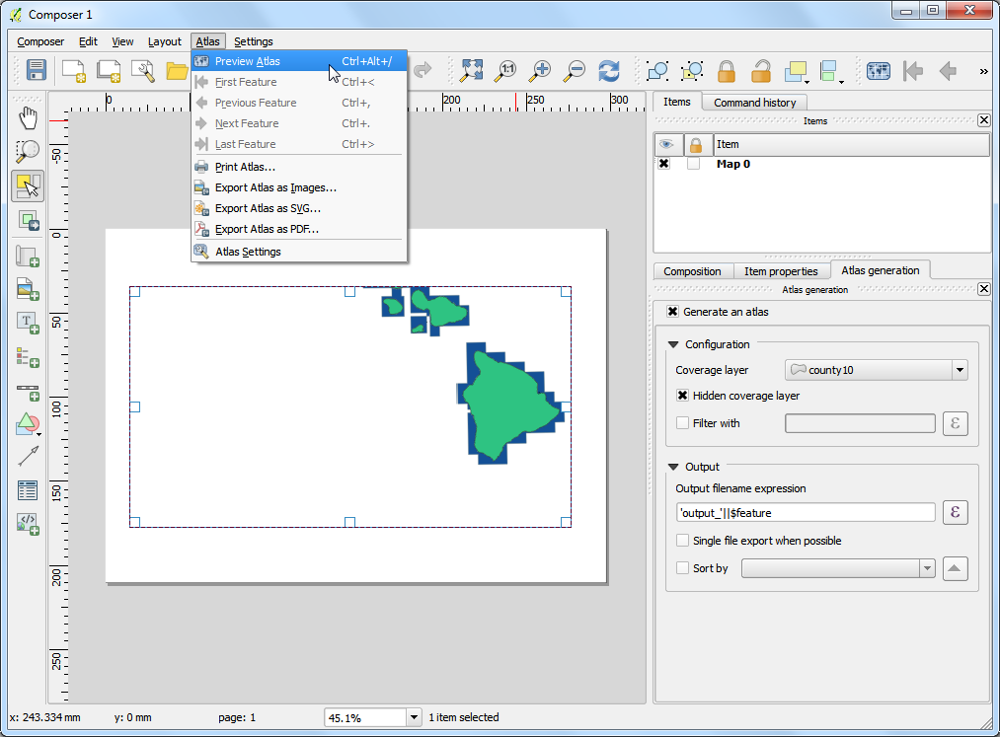

Basic Vector Styling
[ Download PDF A4 Letter ]
To create a map, one has to style the GIS data and present it in a form that is
visually informative. There are a large number of options available in QGIS to
apply different types of symbology to the underlying data. In this tutorial, we
will explore some basics of styling.
Overview of the task
We will style a vector layer to show life expectancy in different countries of the world.
Other skills you will learn
- View the attribute table of a vector layer.
Procedure
- Open QGIS and go to .

- Browse to the downloaded lifeexpectancy.zip file and click
Open. Select newsweek_data.shp and click Open.
Next you will be prompted for choosing the CRS. Select WGS84 EPSG:4326
as the Coordinate Reference System (CRS).

- The shapefile contained within the zip file is now loaded and you can see
the default style applied to it.

- Right click on the layer name and select Open Attribute Table.

- Explore the different attributes. To style a layer, we must pick an
attribute or a column that would represent the map we are trying to
create. Since we want to create a layer represting life expectancy, i.e. the
average age till a person lives in a country, the field LIFEXPCT
is the attribute we want to use in styling.

- Close the attribute table. Right click on the layer again and choose
Properties.

- The various styling options are located in the Style tab of the Properties
dialog. Clicking on the drop-down button inthe Style dialiog, you will see
there are five options available - Single Symbol, Categorized,
Graduated, Rule Based and Point
displacement. We will explore the first three in this tutorial.

- Select Single Symbol. This option allows you to choose a single
style that will be applied to all the features in the layer. Since this is a
polygon dataset, you have two basic choices. You can fill the polygon, or
you can style with only outline. You can choose the dotted
pattern fill and click OK.

- You will see a new style applied to the layer with the fill pattern you
chose.

- You will see that this Single Symbol style isn’t useful in communicating
the life expectancy data we are trying to map. Let us explore another
styling option. Right-click the layer again and choose
Properties. This time choose Categorized from the
Style tab. Categorized means the features in the layer will be
shown in different shades of a color based on unique values in an attribute
field. Choose LIFEXPCT value as the Column. Choose
a color ramp of your choice and click Classify
at the bottom. Click OK.

- You will see different countries appearing in shades of blue. Lighter
shades meaning lower life expectancy and darker shades meaning higher life
expectancy. This representation of the data is more useful and clearly show
how life expectancy in developed countries vs. developing countries. This
would be the type of style we set out to create.

Let us explore the Graduated symbology type in the Style
dialog now. Graduated symbology type allows you to break down the data in a column in
unique classes and choose a different style for each of the classes. We
can think of classifying our life expectancy data into 3 classes, LOW,
MEDIUM and HIGH. Choose LIFEXPCT as the Column and
choose 3 as the classes. You will see there are many Mode
optionsa vailable. Let us see the logic behind each of these modes.
There are 5 modes available. Equal Interval,
Quantile, Natural Breaks (Jenks),
Standard Deviation and Pretty Breaks.
These modes use different statistical algorithms to break down the data
into separate classes.
- Equal Interval: As the name suggests, this method will will create classes
which are at the same size. If our data ranges from 0-100 and we want 10
classes, this method would create a class from 0-10, 10-20, 20-30 and so on
, keeping each class the same size of 10 units.
- Quantile - This method will decide the classes such that number of values
in each class are the same. If there are 100 values and we want 4
classes, quantile method will decide the classes such that each class
will have 25 values.
- Natural Breaks (Jenks) - This algorithm tries to find natural groupings
of data to create classes. The resulting classes will be such that there
will be maximum variance between individual classes and least variance
within each class.
- Standard Deviation - This method will calculate the mean of the data, and
create classes based on standard deviation from the mean.
- Pretty Breaks - This is based on the statistical package R’s pretty
algorithm. It is a bit complex, but the pretty in the name means it
creates class boundaries that are round numbers.
To keep things simple, let’s use the Quantile method. Click Classify at the
bottom and you will see 3 classes show up with their corresponding values.
Click OK.
Nota
For an attribute to be used in Graduated style, it must be a numeric field. Integer and Real
values are fine, but if the attribute field type is String, it cannot be
used with this styling option.

- You will see a map showing countries in either of 3 colors representing
average life expectancy in the country.

- Now go back to the Style dialog by right clicking the layer and choosing
Properties. There are some more styling options available.
You can click on the Symbol for each of the classes and choose a different style.
We will choose Red, Yellow and Green fill colors to indicate low, medium and high life expectancy.

- In the Symbol Selector dialog, click on Color
selector.

- Click on a color fom the Select Color dialog.

- Back in the Layer Properties dialog, you can double-click on the
Label column next to each value and enter the text that you
want to display. Similarly, you may double-click on the Value
column to edit the selected ranges. Click OK once you are
satisfied with the classes.

- This style definitely conveys a lot more useful map than the previous two
attempts. There are clearly marked class names and colors to represent our
interpretation of the life expectancy values.